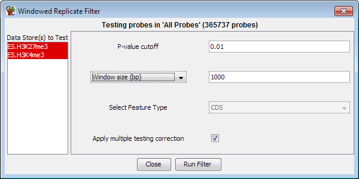

Windowed Replicate Filter
The windowed replicate filter can be used to look for a consistent effect
across a set of adjacent probes. It uses either a t-test or an Anova to
assess whether a set of probes shows a signficant difference either between
two or more data stores, or from a distribution with a mean of zero.

Options
- You need to select one or more DataStores from the list on the left. Data
Sets are shown in red and Data Stores are shown in Blue. If you select a single
store you will be comparing to a mean of 0. Selecting two stores performs a
t-test between the two sets of data and selecting more than two performs an Anova.
- You need to select a p-value cutoff. Probe from within windows where the
p-value is below the cutoff will be included in the filtered set.
- You can select how to construct the windows inside which the test will
be performed. This can be expressed either as a fixed number
of bases, or as a number of consecutive probes to slide over the genome. You can also choose to use a class of
features as the windows in which to aggregate probes. For a test to be performed you must
have at least 3 probes falling inside the window you have chosen
- The multiple testing correction option will adjust your p-value using a Benjamini
and Hochberg correction to take account of the number of tests you have performed. Raw
p-values are only valid for a single test, and if you perform multiple tests you must
correct your p-values to get an accurate representation of the significance of your results.